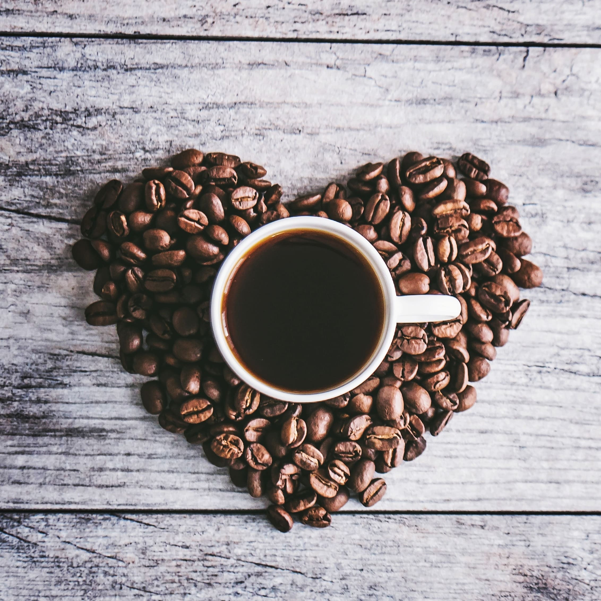

𝚂 𝙰 𝙸 𝙴 𝙳
🤍 ولك بالمثل يا داعياً لنا أو علينا -
JSON Tool Premium لأجهزة الاندرويد مجانا
Donate - تبرع
• 💙 illusion - وَهم 💙 •
• 🌿 رَاء 🌿 •
• 🤖 جديدنا على التيليجرام 🤖 •
• ♥️ Aşkım - عشقي ♥️ •
• 🗂 SAIED Files 🗂 •
• 🕋 الأدعية والأذكار 🕋 •
• 🕌 آيات القرآن الكريم 🕌 •
• ⏰ مواقيت الصلاة - دمشق ⏰ •